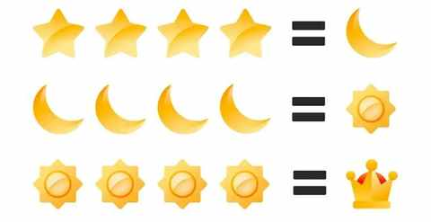
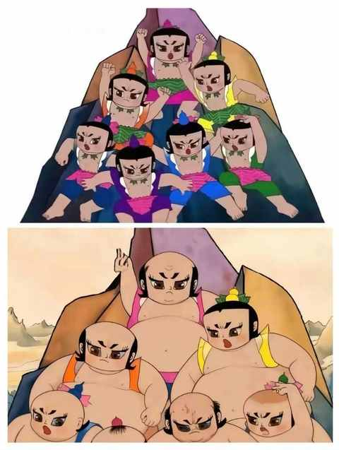

嘿！还记得“为QQ等级挂机”的岁月吗？来晒晒你的等级吧！
一、引子
上上周的一天早晨，刚把娃送到学校门口，走回停车场的时候，遇到红灯，拿起手机看到了 QQ 的提醒，点进去显示的是：你的 QQ 等级已经达到 115 级。

QQ 等级，一个曾经熟悉但早已陌生的词汇，现在依然登录 QQ 的主要目的是接受班级 QQ 群的消息。
几乎没有其他人会在 QQ 上联系，都在微信上面保持沟通，好在微信并没有等级也没有 VIP 会员和 SVIP 会员。
二、从注册 QQ 到半弃用 QQ
从 2007 年注册 QQ的时候才 17 岁，到现在 2025 年已经 35+，不得不感慨，光阴似箭啊！
1️⃣ 高考后注册 QQ
印象中是 2007 年第一次高考后，在镇上的网吧注册的 QQ，当时去网吧上网得两块钱一个小时，而且网速慢，机器速度也不快。
在没有自己的电脑之前，登录 QQ 只能去网吧，或者去亲戚朋友家的电脑上挂一会儿 QQ，看看是否有新消息、再捯饬下 QQ 秀、给 QQ 宠物喂食、装扮 QQ 空间……

当时去网吧，极有可能要帮好几个同学挂 QQ，因为 QQ 等级是当时核心会套路到的话题之一，当时的计量单位是：星星、月亮、太阳、皇冠。
再进阶一点，如果哪位同学有一个能登录 QQ 的手机，那他的 QQ 等级绝对是全班前几名。
曾经很长一段时间里面，集齐四个皇冠之后会是什么等级，一直是一个谜题。
直到2025年6月7日0点56分全球首位QQ256级用户诞生！
这位用户是全球首提“ 时光企鹅 ”图标的 QQ 用户。
2️⃣ 频繁用 QQ 的 5 年
在大专的两年和刚实习工作前 3 年，QQ 用的很勤，同学同事之前都是会加 QQ 群和加 QQ 好友。
直到2011 年，微信横空出世，慢慢在工作中成为主流的沟通工具，大概从 2014 年开始，入职新公司的时候也会有 QQ 群，但同事间都是加微信好友了。
不得不说的是，QQ 可比微信好用太多了，消息再多都不卡顿，加载快且支持云同步，从来不需要特地的导出导入数据，而且 QQ 的表情包丰富到极致。
3️⃣ 半弃用 QQ
为什么是半弃用呢，主要在于还有一些老的 QQ 群和 QQ 空间的资料在里面。
一年中会有那么几次，会登录 QQ 看看，有一些好友依然在用 QQ 空间更新动态，估计绝大数人也都和我一样不再更新动态，只是一年看个几次。

一晃眼，我注册 QQ的年限已经比注册 QQ 时的年龄大了，再过个四五年，我在外地呆的时间也会比在家乡呆的时间更长了。
三、结语
从不谙世事的时候比几颗星星几个太阳，到操心柴米油盐酱醋茶。 QQ静静地见证着一切。它没变，变的是我们。
你的QQ等级是多少？里面又有着怎样的故事？评论区里聊聊吧！
近期文章
实用！和所有Intel版Mac用户共享：清灰+限速+风扇控制三管齐下，有了哪些变化？
11 个月，开极氪7X跑两万公里，用车总结及好物分享
中年人的3年闲鱼实战，真实经验分享：这5类物品买二手，能轻松省下40%
一个长居省外中年人的合肥印象：记2025的年第4次合肥行
中年减肥成功2年后，才发现运动形式真不重要，守住这3点才能不反弹！
我的两个配图利器：两个APP强强联合，实现1+1 > 2的视觉升级
中年初跑者增加跑量两个月后，对如何选跑鞋有了 3个新思考
别慌！和所有Intel版Mac用户共享：3个让我们继续用的理由和2个续命秘籍
老车主看了极氪7X的焕新版之后：情绪稳定！
中年减肥成功2年后，才发现这5个坑当初要是有人点醒我该多好！
中年减肥成功2年后，才发现维持体重靠的不是毅力，而是这5个微习惯